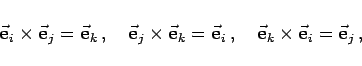
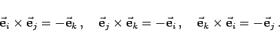
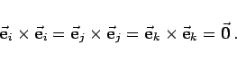

Inhalt Index DeskTop Bronstein

 Geometrie Vektoralgebra und analytische Geometrie Analytische Geometrie des Raumes Grundlegende Begriffe und Formeln, räumliche Koordinatensysteme
Geometrie Vektoralgebra und analytische Geometrie Analytische Geometrie des Raumes Grundlegende Begriffe und Formeln, räumliche Koordinatensysteme


Der Schnittpunkt 0 der Koordinatenachsen wird Koordinatenursprung oder Koordinatenanfangspunkt genannt. Die Koordinaten x,y,z heißen Abszisse, Ordinate und Applikate. Die Schreibweise P(a,b,c) bedeutet, daß der Punkt P die Koordinaten x = a, y = b, z = c hat. Die Vorzeichen der Koordinaten richten sich nach dem Oktanten, in dem sich der Punkt P befindet.
|  | (3.377a) |
d.h., es gilt die Rechte-Hand-Regel.
Die drei Formeln gehen durch zyklische Vertauschung der Einheitsvektoren auseinander hervor.
Im linkshändigen kartesischen Koordinatensystem (rechte Abbildung) gilt
|  | (3.377b) |
Das negative Vorzeichen der Vektorprodukte ergibt sich aus der linkshändigen Reihenfolge der Einheitsvektoren, d.h. ihrer Anordnung im Uhrzeigersinn.
Es ist zu beachten, daß in beiden Fällen gilt:
|  | (3.377c) |
Im allgemeinen werden, wie auch in diesem Buch, rechtshändige Koordinatensysteme verwendet; die Formeln sind allerdings nicht von dieser Wahl abhängig.